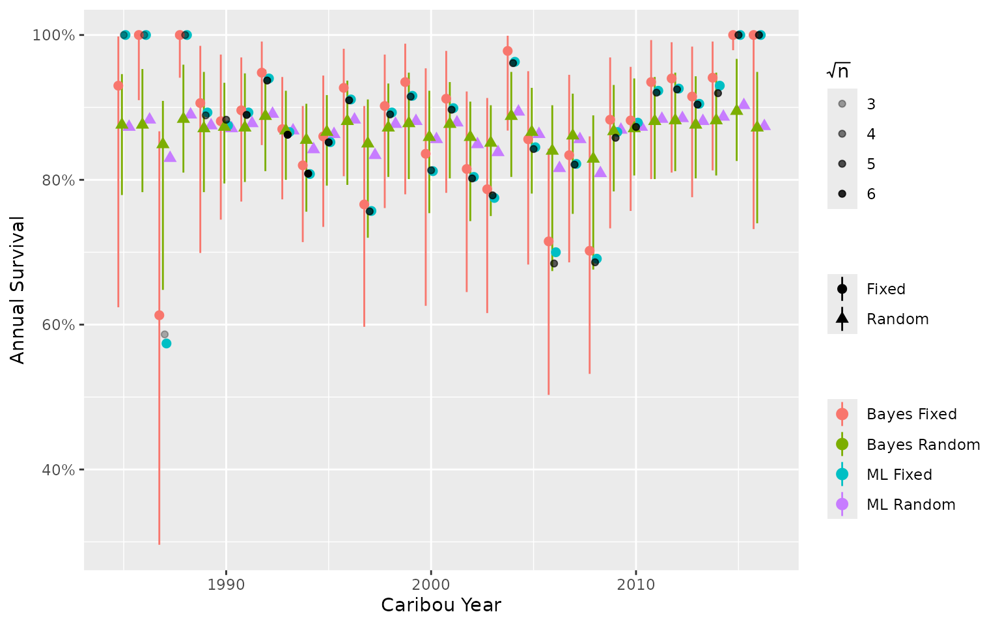

vignettes/articles/methods.Rmd
methods.RmdThe frequentist (Maximum Likelihood) framework selects the parameter values which if they were true would be most likely to give rise to the data. It assumes that all possible survival and recruitment values are equally likely to be true. The confidence intervals (CIs) are invalid with small sample size.
The Bayesian framework selects parameter values which are most likely to be true given the data. It allows incorporation of biological knowledge. The credible intervals (CIs) represent the actual uncertainty irrespective of the sample size.
Most models can be fit in a Bayesian or frequentist framework.
When a categorical variable is treated as a fixed effect each parameter value is estimated in isolation. In contrast, when it is treated as a random effect the parameter values are assumed to be drawn from a common underlying distribution which allows the typical values to be estimated and each parameter estimate to be influenced by the other ones.
The use of random effects is especially beneficial when some months/years have sparse or missing data. In the case of sparse data or extreme values, estimates will tend to be pulled toward the grand mean, a behaviour known as ‘shrinkage’ (Kery and Schaub 2011). For missing data, the estimate will be equal to the mean. Shrinkage may not be desired if extreme values are likely to represent the true value (e.g., numerous wolf attacks in one year). In this case, a fixed effect model would yield more reliable estimates.
Fixed and random effects can be used in Bayesian or frequentist models.
The frequentist approach simply identifies the parameter values that maximize the likelihood, i.e., have the greatest probability of having produced the data if they were true. It does this by searching parameter space for the combination of parameter values with the Maximum Likelihood. Parameter estimates for random effects can be estimated using the Laplace approximation (i.e., with software packages TMB or Nimble). The CIs are calculated using the standard errors, assuming that the likelihood is normally distributed. This approach has the advantage of being fast.
The Bayesian approach multiplies the likelihood by the prior probability of the parameter values being true to get the posterior probability of the parameter values being true based on the data. Bayesian methods repeatedly sample from the posterior probability distributions using MCMC (Monte Carlo Markov Chain) methods. This approach has the advantage of allowing derived parameters such as the population growth rate to be easily estimated with full uncertainty from the primary survival and recruitment parameters.
To demonstrate, we use an anonymized data set to compare annual survival estimates from a:
Observed data (black points) are shown as the mean monthly survival by year, weighted by the square root of the number of collars. Transparency of the black points shows the mean .

In this example, Maximum Likelihood and Bayesian models of the same
type (i.e., fixed or random) have similar estimates because the Bayesian
model priors are not informative. Estimates from random effect models
tend to be pulled toward the mean. Estimates from the fixed effect
models more closely match the observed data, including extreme values.
Note, there is no functionality in bboutools to get
confidence intervals on predictions (i.e., derived parameters) for
Maximum Likelihood models. This is a more straightforward task with
Bayesian models.
bboutools provides the option to estimate parameter
values using a Maximum Likelihood or a fully Bayesian approach. Random
effects are used where appropriate by default. The Bayesian approach
also uses biologically reasonable, weakly informative priors by default.
bboutools provides relatively simple general models that
can be used to compare survival, recruitment and population growth
estimates across jurisdictions.
By default, the bboutools Bayesian method saves 1,000
MCMC samples from each of three chains (after discarding the first
halves). The number of samples saved can be adjusted with the
niters argument. With niters set, the user can
simply increment the thinning rate as required to achieve convergence.
This process is automated in the Shiny app.
The survival model with annual random effect and trend is specified below in a simplified form of the BUGS language for readability. The same model code is used for both the Bayesian and frequentist methods.
b0 ~ Normal(3, 10)
bYear ~ Normal(0, 2)
sMonth ~ Exponential(1)
for(i in 1:nMonth) bMonth[i] ~ Normal(0, sMonth)
sAnnual ~ Exponential(1)
for(i in 1:nAnnual) bAnnual[i] ~ Normal(0, sAnnual)
for(i in 1:nObs) {
logit(eSurvival[i]) = b0 + bMonth[Month[i]] + bAnnual[Annual[i]] + bYear * Year[i]
Mortalities[i] ~ Binomial(1 - eSurvival[i], StartTotal[i])
}The recruitment model with annual random effect and year trend is specified below in a simplified form of the BUGS language for readability. Group-level observations are aggregated by caribou year prior to model fitting.
b0 ~ Normal(-1, 5)
bYear ~ Normal(0, 1)
adult_female_proportion ~ Beta(65, 35)
sAnnual ~ Exponential(1)
for(i in 1:nAnnual) bAnnual[i] ~ Normal(0, sAnnual)
for(i in 1:nAnnual) {
FemaleYearlings[i] ~ Binomial(sex_ratio, Yearlings[i])
Cows[i] ~ Binomial(adult_female_proportion, CowsBulls[i])
OtherAdultsFemales[i] ~ Binomial(adult_female_proportion, UnknownAdults[i])
log(eRecruitment[i]) <- b0 + bAnnual[Annual[i]] + bYear * Year[i]
AdultsFemales[i] <- max(FemaleYearlings[i] + Cows[i] + OtherAdultsFemales[i], 1)
Calves[i] ~ Binomial(eRecruitment[i], AdultsFemales[i])
}In the frequentist approach, demographic stochasticity is removed from the model because it is not possible to estimate discrete latent variables using Laplace approximation. This has a minimal effect on estimates. The adjusted model with no demographic stochasticity is specified below.
bYear ~ Normal(0, 1)
adult_female_proportion ~ Beta(65, 35)
sAnnual ~ Exponential(1)
for(i in 1:nAnnual) bAnnual[i] ~ Normal(0, sAnnual)
for(i in 1:nAnnual) {
Cows[i] ~ Binomial(adult_female_proportion, CowsBulls[i])
FemaleYearlings[i] <- round(sex_ratio * Yearlings[i])
OtherAdultsFemales[i] <- round(adult_female_proportion * UnknownAdults[i])
logit(eRecruitment[i]) <- b0 + bAnnual[Annual[i]] + bYear * Year[i]
AdultsFemales[i] <- max(FemaleYearlings[i] + Cows[i] + OtherAdultsFemales[i], 1)
Calves[i] ~ Binomial(eRecruitment[i], AdultsFemales[i])
}As ungulate populations are generally polygynous survival and recruitment are estimated with respect to the number of adult (mature) females.
To estimate recruitment following DeCesare et al. (2012), the predicted annual calves per female adult is first divided by two to give the expected number of female calves per adult female (under the assumption of a 1:1 sex ratio).
Next the annual recruitment is adjusted to give the proportional change in the population.
The rate of population growth () is
where is the population abundance in year .
Following Hatter and Bergerud (1991), it can be shown that
where is the annual survival.
is calculated from and as
More reliable estimates may be produced with an Integrated Population Model (IPM). See for example methods used in Lamb et al. (2024). However, an IPM is beyond the scope of this software as it requires estimates of abundance , which is not typically available in all jurisdictions.